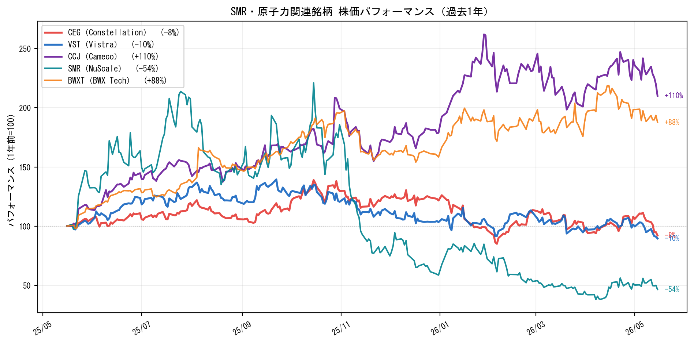

SMR・自家発電：グリッドに繋がらないデータセンターの電力源
米国の系統連系申請の平均待機期間は5年を超えた。ビッグテックは待てない。答えは「グリッドに繋がない自家発電」だ。SMR（小型モジュール炉）とガスタービンがその主役になりつつある。
なぜSMRが投資テーマになるのか
AIデータセンターはMW単位で電力を消費する。グリッドからの接続を申請しても5年以上待たされる現状では、ビッグテックは自前の電源を求め始めている。
ビハインド・ザ・メーター（BTM）戦略：
グリッドを経由せず、データセンター敷地内または隣接地に電源を設置するアプローチ。太陽光・ガスタービンに加え、カーボンニュートラルで24時間安定稼働できる「SMR」が最有力候補として急浮上している。
| 電源オプション | 安定性 | CO₂ | コスト | 実用化時期 |
|---|---|---|---|---|
| 天然ガスタービン | ◎ | × | 低 | 今すぐ |
| 太陽光+蓄電池 | △（夜間・曇天） | ◎ | 中 | 今すぐ |
| SMR（小型モジュール炉） | ◎ | ◎ | 高（初期） | 2028〜2030年 |
| 水素タービン | △（水素製造コスト） | ◎ | 高 | 2030年以降 |
主要動向：
- Microsoft：Three Mile Island原発を2028年まで再稼働（Constellation Energyと20年PPA契約）
- Amazon：Talen Energy原発をペンシルベニアで直接購入（$650M）
- Google：Kairos PowerのMSRと7基購入に向けたPPA締結
- NuScale（SMR）：商業1号機は難航中だが、技術評価は継続中
主要銘柄マップ
原子力発電所オペレーター（即座の受益者）
| 銘柄 | ティッカー | 業界パワー | 概要 | ステータス |
|---|---|---|---|---|
| Constellation Energy | CEG（NASDAQ） | ★★★★★ | 米国最大の原子力発電事業者。Microsoftとの20年PPAが象徴的 | ウォッチ |
| Vistra Corp | VST（NYSE） | ★★★★ | 原子力+ガス+蓄電池のハイブリッド電力会社 | ウォッチ |
ウラン採掘（核燃料供給チェーン）
| 銘柄 | ティッカー | 業界パワー | 概要 | ステータス |
|---|---|---|---|---|
| Cameco | CCJ（NYSE） | ★★★★★ | 西側世界最大のウラン採掘会社。原発回帰でウラン需要増 | ウォッチ |
SMR開発（長期・投機的）
| 銘柄 | ティッカー | 業界パワー | 概要 | ステータス |
|---|---|---|---|---|
| NuScale Power | SMR（NYSE） | ★★★ | 米国唯一のNRC設計認証取得SMR開発企業 | ウォッチ（高リスク） |
| BWX Technologies | BWXT（NYSE） | ★★★★ | 海軍原子炉・SMRコンポーネントの製造受託 | ウォッチ |
株価パフォーマンス（過去1年）
投資まとめ
SMRテーマで最もリスク/リターンのバランスが良いのはCEG（Constellation）だ。既存原発の稼働延長という「確実な収益」に加え、ビッグテックとの長期PPAが収益を下支えする。
SMR（NuScale）への投資は高リスク： 1号機の完成遅延・資金調達リスクが残存しており、商業電力会社（CEG・VST）とは全く異なる投資プロファイルを持つ。
現状： 全銘柄ウォッチ。グリッド制約が深刻化するニュースやビッグテックの新規PPA締結をトリガーに購入検討。